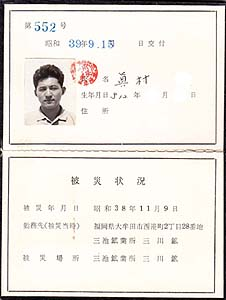

<!DOCTYPE HTML PUBLIC "-//W3C//DTD HTML 4.01 Transitional//EN">
<HTML>
<HEAD>
<META http-equiv="Content-Type" content="text/html>
<META http-equiv="Content-Style-Type" content="text/css" media="all">
<TITLE>みいけ展示室</TITLE>
</HEAD>
<BODY>

<BLOCKQUOTE>
<TABLE>
  <TBODY>
    <TR>
      <TD width="516">
      <P class="MsoNormal" style="text-indent:71.65pt;mso-char-indent-count:4.92"><B style="mso-bidi-font-weight:normal"><FONT color="red" size="+1">展示品　炭塵爆発被災手帳</FONT><SPAN lang="EN-US" style="font-size:16.0pt;
mso-font-width:90%"></SPAN></B><BR>
      </P>
      <TABLE>
        <TBODY>
          <TR>
            <TD width="91"></TD>
            <TD width="404">　　　
            </TD>
          </TR>
        </TBODY>
      </TABLE>
      <p class=MsoNormal style='text-indent:11.0pt;mso-char-indent-count:1.0;
line-height:17.0pt;mso-line-height-rule:exactly'><FONT face="MS UI Gothic">　1963年11月9日、三井鉱山三池鉱業所三川鉱第一斜坑で炭塵大爆発が
発生。死者458人、ＣＯ中毒患者約839人。この大事故に被災したことを証明する手帳である。
<spanlang=EN-US style='font-size:11.0pt'></span><BR>
　黒表紙に金色文字で「健康管理手帳　三井鉱山株式会社三池鉱業所長」と記されてある。<BR>
　手帳の交付年月日は「昭和39年9月15日」。<BR>
　その被災状況欄には「被災年月日　昭和38年11月9日」「勤務先　三池鉱業所三川鉱」「被災場所　三池鉱業所三川鉱」と記されてある。<BR>
　そのほか、「療養記録」と「健康診断実施記録」の欄もある。<BR>
　別紙で、「注意事項」と記したメモ書き程度の用紙がつけられてあり、そこには「本手帳は療養経過の記録及び再発診断等の際医師に
提示しなければなりません」「今後他の病院に転医した場合ならびに治ゆとなった場合はそのつ度医師に証明してもらって下さい」
「本手帳は退職した場合でも必要でありますので大切に保管しておいて下さい」と説明がある。<BR>
　しかし、「この手帳は被災者全員に交付されたが、単なる被災証明というだけで、何のメリットもなかった」という。
</FONT></p>
      </TD>
    </TR>
  </TBODY>
</TABLE>
</BLOCKQUOTE>

</BODY>
</HTML>